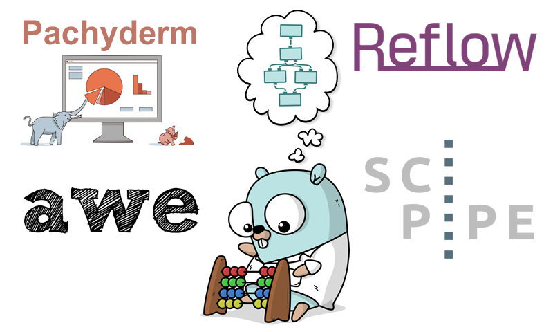

Go is growing in bioinformatics workflow tools

TL;DR: We wrote a post on gopherdata.io, about the growing ecosystem of Go-based workflow tools in bioinformatics. Go read it here
It is interesting to note how Google's Go programming language seems to increase in popularity in bioinformatics.
Just to give a sample of some of the Go based bioinformatics tools I've stumbled upon, there is since a few years back, the biogo library, providing common functionality for bioinformatics tasks. It was recently reviewed in two great blog posts (part I, part II). Further, Brent Pedersen also wrote a little collection of Go based bioinfo tools, compiled down into a single static binary, called goleft, and finally, I there is the elprep tool, used to prepare .sam/.bam/.cram files for variant calling, which was published in a PLoS one paper. Just a few examples.
As being a lot into workflows, and workflows in Go in particular, with my work on SciPipe, it is particularly interesting to see the ecosystem of Go-based workflow tools for bioinformatics, growing. At pharmb.io, we are already experimenting with the more full-blown (compared to SciPipe) framework Pachyderm, and I have seen a Go based framework named AWE as well. Now, the other week, super-well-funded life science startup Grail Inc. released the tool they are using to run bioinformatics analyses on the cloud, named Reflow.
This is all very exciting for the Go-in-datascience (aka #gopherdata) and Go-in-bioinformatics communities. But it also felt like it might be time to step back and do a little overview of the growing workflow tool landscape, now that the options start to be more than just one or two main ones. So, this is what we - together with Daniel Whitenack of Pachyderm, and my colleague Jon Ander Novella, decided to do. Find the link to the post, on GopherData.io website, below:
- Read post: More Go-based Workflow Tools in Bioinformatics (gopherdata.io)